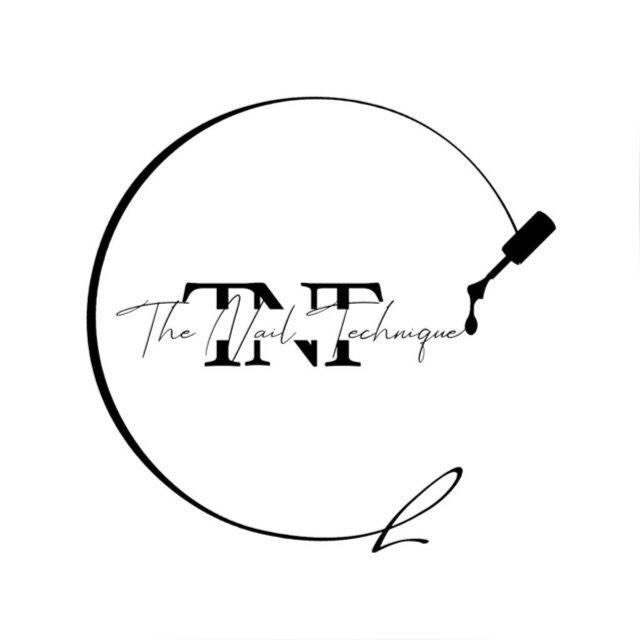
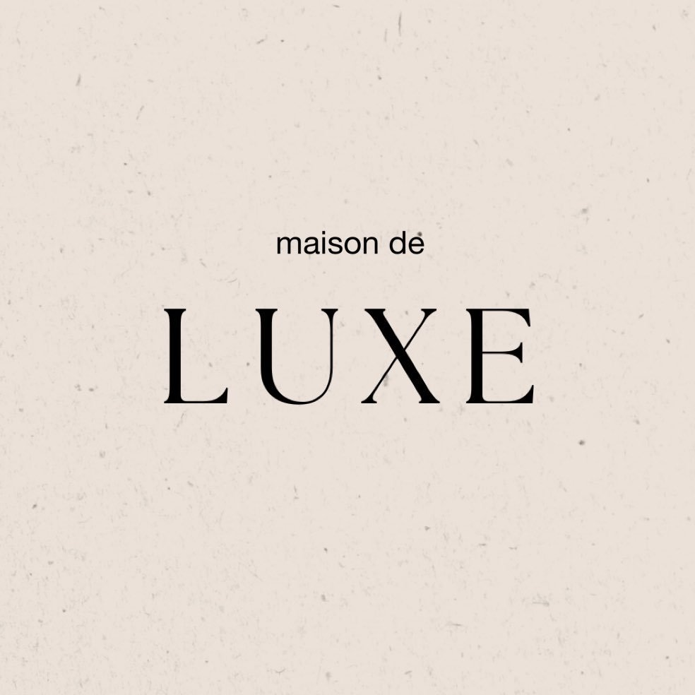

Demo

The Nail Technique
Known for exceptional nail artistry, professionalism and quality service.The Nail Technique also offer expert nail classes to help aspiring technicians build successful careers.
→

Dr Sifiso Nkosi Aesthetic Clinic
Dr Sifiso Nkosi Aesthetic is a medical aesthetics clinic located in Die Wilgers, Pretoria, Gauteng, South Africa.
→

Maison de Luxe
Maison de Luxe is a thrift store specializing in authentic pre-loved luxury purses and bags. Known for quality and authenticity, it has built a strong following on Instagram.
→

block
Block is a sourcing service connecting South Africa to trusted suppliers and products in China.
→

Richendor General Trading
Quality Apple devices, accessories, and everyday tech essentials.
→
Vogue Fabrics
Vogue Fabrics is a renowned Nigerian fashion and textile brand offering premium fabrics and stylish dresses.
→

xxxxxxxxxxx
xxxxxxxxxxx
→